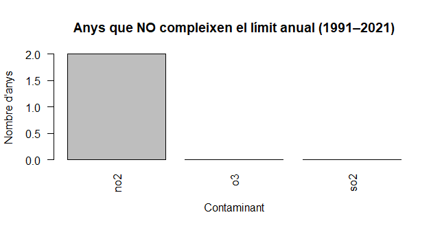

Air pollution, meteorological, conditions and respiratory infections in Baix Llobregat. A 14-year spatiotemporal analysis.
The objective of this research project are:
- Diego & Yeray are studying all data from El Prat is a city located in Baix Llobregat county. In this county we are using data from Air Pollution Prevention and Monitoring Network corresponding to hourly data of air pollutants from year 2009 to 2025. Data included: nitrogen oxide (NO), nitrogen dioxide (NO2), nitrogen oxides (NOX), ozone (O3) and sulphur dioxide (SO2)
- Meteorological data is available from meteo cat server (Meteorological dataserver of Catalonia). The data structure is based on semi-hourly data that is, data every 30 minutes from 2009 to 2025. Data included: temperature, relative humidity, pressure, wind direction, wind speed and solar irradiance
- Respiratory infection data are collected from SIVIC using data from region 75, that is Barcelona Metropolitan south region 182 is the identificator of the Primary health care center from El Prat

Pollutants in El Prat
This chart shows how the pollutants—nitric oxide (NO), nitrogen dioxide (NO2), total nitrogen oxides (NOX), and ozone (O3)—vary according to the hour of the day, the month, and the day of the week in El Prat during the years 2009–2025.

Nitrogen oxide (NO2) concentration
This map shows the concentration of nitrogen oxide (NO2) at the Jardins de la Pau station in El Prat de Llobregat between 2009 and 2025, illustrating how it varies by month and hour of the day, with blue indicating low levels and red indicating high levels.

The number of NO2 exceedances
The image shows the number of exceedances of nitrogen dioxide (NO2), which have surpassed the annual limit established by European regulations. According to the analyzed data, this limit was exceeded in two years of the studied period, indicating that NO2 is the pollutant that has presented the most air quality problems compared with the other analyzed pollutants.3.

Daily pollution levels in 2025
This calendar shows the daily pollution levels in 2025 in El Prat, indicating the concentration of nitrogen dioxide (NO2) for each day of the year. The redder colors represent days with higher levels of pollution, while the lighter shades indicate lower levels.


SIVIC
Depending on age, a higher number of cases of specific respiratory infections may be reported, as certain age groups are more susceptible to particular types of infections. Likewise, sex can influence the likelihood of contracting different kinds of respiratory infections, with males and females showing varying susceptibility patterns for some conditions. These factors, together with socioeconomic index, age group, registered cases, medical consultations, region name, ABS code (182), and regional code (75), are all included in the SIVIC database. This comprehensive dataset allows for detailed analyses of how demographic factors, including age and sex, affect the incidence and distribution of acute respiratory infections in El Prat, providing valuable insights for public health monitoring and planning.

METEO
Meteocat is the public entity of the Generalitat responsible for observing, forecasting, and studying weather and climate in Catalonia; it manages and operates the Catalonia Automatic Meteorological Station Network (XEMA) and weather radars to collect real-time data, issues hazard warnings for extreme weather events such as floods, snow, or strong winds, provides official meteorological information and updates through its website, mobile app, bulletins, and social media channels, collaborates with other public administrations and organizations on meteorology, air pollution, and climatology, and the variations observed in short-term forecasts between 30 and 36 hours are due to updates in weather models, atmospheric instabilities, inherent forecast uncertainties, and localized effects such as terrain or coastal influences.
Rtudio code
1. Loading files
The code first defines a folder where the CSV files are stored. Then it uses a function to search for all files that match a specific pattern (for example, files that start with “meteo”). After that, the files are read using read.csv() to load the data into R.
2. Combining the data
With lapply(), all the files are read and stored in a list. Then do.call(rbind, ...) combines all the data into a single table by placing the rows of each file one under another.
3. Converting dates
The function as.POSIXct() converts the date column into a time format that R can recognize. This allows the program to sort dates correctly and perform calculations by day, week, or year.
4. Manipulating data
Using the tidyverse library, functions such as mutate() create new columns, arrange() sorts the rows, and group_by() together with summarise() groups the data and calculates totals or averages.
5. Saving the results
Finally, write_csv() saves the final results in a new CSV file so the processed data can be used later for analysis or in other programs.